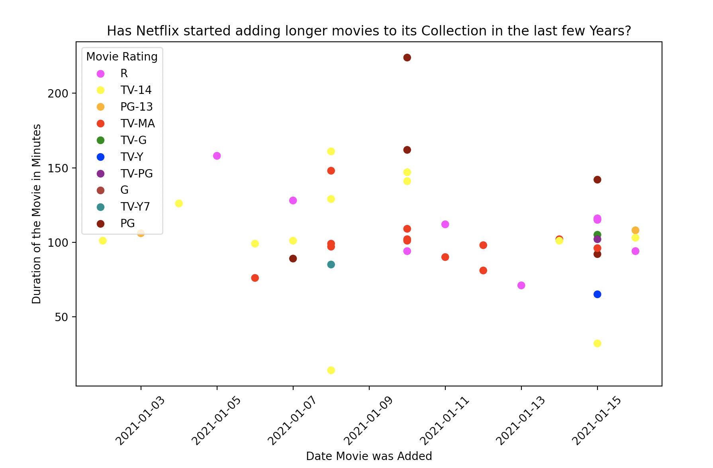

hw-03: Interactive Webpage, and Marks & Channels
Marks
Channels
- Color hue
- Identity, categorical attribute to describe presidental affiliation.
- This is a good mapping because there are only two possible choices according to this visualization, and the colors are in stark contrast with one another to differentiate them. It is also consistent to the colors of the political parties each candidate belongs to.
Colormap
- Divergent
- Represents political party affiliation
- This is a good choice, and though it appears categorical because of the fact there are only two colors present, the blue and red are actually representing a left side and a right side (diverging around neutral political stances). This is a good mapping because it is consistent with what americans interpret left and right colors as.

Marks
Channels
- Position on common scale
- Position on two common axes reflects magnitude of exit velocity and launch angle
- This is pretty standard for a graph, and plotting two related statistics against each other can show us trends in data, as this graph does.
- Color hue
- Categorizes identity into either above or below average scoring value.
- This is a good choice, as both colors are clear and distinct and help identify what large swaths of the graph are attributed to a "bad hit".
- Color saturation
- Shows magnitude of the category any given data point
- This is a very good choice, as it helps differentiate between when a hit is becoming good(or progressively worse), and helps identify areas that are the best or worst hits.
Colormap
- Divergent
- Diverges around a neutral LWTS to show how good or bad the hit was for the score.
- This is a very good choice, as it helps create a gradient across the graph to show interesting trends of information, as well as brings in new data that otherwise would not have been able to be seen.

Marks
Channels
- Position on common scale
- Reflects magnitude of length of movie and date movie was released across two axes.
- This is a good choice, as it helps us identify a (lack of) trend between release date and time of a movie easily via positions.
Colormap
- Categorical
- Differentiates rating of movie by strong colors.
- This is a good choice, as there are so many ratings of movies it is hard to from them into a gradient without it being too difficult to tell individual rating apart from one another, so a categorical approach works best.
Acknowledgements
- https://www.w3schools.com/html/default.asp
- https://www.w3schools.com/css/default.asp